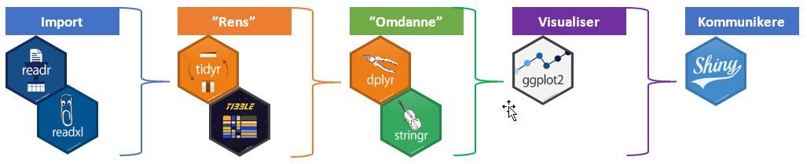

Introduktion_til_R
2020-05-03
Kapitel 1 Introduktion
Dette kursus er for dig der gerne vil igang med at bruge R. Det kan være at du i dag udfører data analyse i Excel eller et andet program.
Jeg har forsøgt at holde kurset så simpelt som muligt, ideen er at få dig igang med at bruge R så hurtigt som muligt. Der findes masser af andre resourcer som går meget i dbyden med en eller flere funktioner og de er super gode når der er styr på de grundlæggende funktioner.
1.1 Workflow
Jeg har valgt at bassere dette kursus på et typisk workflow med brug af de forskellige funktioner i Tidyvers pakken.
Tidyvers pakke er valgt da den indholder alle de funktioner som du skal bruge for at komme igang med at lave dataanalyse i R. Det er en nogle meget effektive funktioner pakken indeholder.

Dette workflow tager dig fra importen af dine data til en interaktiv præsentationen af dine data.
1.2 R kode filer
Du kan hente følgende R kode filer, her: LINK
- Kapitel_4_5.R
- Kapitel_6.R
- Kapitel_7.R
- Kapitel_8.R
- Kapitel_9.R
- Kapitel_10.R
- Kapitel_11.R